User Guide
Fernando A. López, Technical University of Cartagena (Spain)
Román Mínguez, University of Castilla-La Mancha (Spain)
Antonio Páez, McMaster University (Canada)
Manuel Ruiz,
Technical University of Cartagena (Spain)
2025-09-19
Source: vignettes/user-guide.Rmd
user-guide.RmdIntroduction
This guide show the functionalities of the spqdep package to test spatial dependence on qualitative datasets.
Global and local statistics give information about the spatial structure of the spatial dataset.
Datasets
Three data sets will be used as examples in this guide:
provinces_spain: The division of Spain into provinces. It is a multypolygon geometry with isolated provinces (Canary and Balearic islands without neighbouring provinces). See for example Paez et al. (2021).
FastFood.sf: A simple feature (sf) dataframe containing the locations of a selection of fast food restaurants in the city of Toronto, Canada (data are from 2008). The data set used as example in Ruiz, López, and Páez (2010). It is a geometry of points.
Boots.sf: A simple features object. A square regular lattice 16x16 from Fig. 3.3 in Upton and Fingleton (1985). In this figure, the cells coded black/white correspond to quadrats where the perennial shrub Atriplex hymenelytra is present/absent in a sample area in Death Valley, California.
The package is install like usual and the dataset can be loaded using the next code
Data Generating Process
Additional to the datasets available in the spqdep package. The user can generate structured spatial processes using the function. The DGP generate with this function defined in Ruiz, López, and Páez (2010).
The next code show how to generate a random process on a set of random points localized in a square . In this case, the connectivity criteria is based on the 4 nearest neighbourhood.
set.seed(123)
N <- 100
cx <- runif(N)
cy <- runif(N)
coor <- cbind(cx,cy)
p <- c(1/6,3/6,2/6) # proportion of classes
rho = 0.5 # level of spatial structure
listw <- spdep::nb2listw(spdep::knn2nb(spdep::knearneigh(coor, k = 4)))
fx <- dgp.spq(list = listw, p = p, rho = rho)The next plot show the qualitative spatial process defined.
ggplot(data.frame(fx = fx, cx = cx, cy = cy), ggplot2::aes(x = cx, y = cy, color = fx)) +
geom_point(size = 6) +
theme_bw()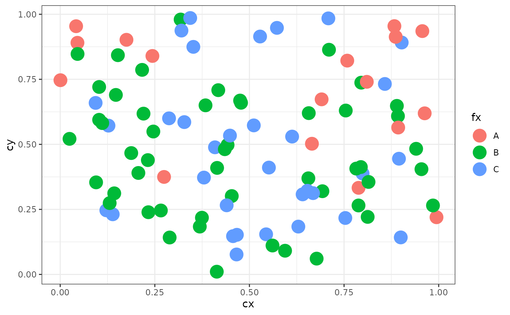
Q-test
The Q-test is a simple, consistent, and powerful statistic for qualitative spatial independence that we develop using concepts from symbolic dynamics and symbolic entropy. The Q test can be used to detect, given a spatial distribution of events, patterns of spatial association of qualitative variables in a wide variety of settings.
The Q-test (Ruiz, López, and Páez 2010) is based on m-surroundings
Before to apply the Q-test it is necessary define a set of the m-surroundings
The function generate a set of m-surrounding.
The user can tuning several parameters to obtain a congruent set of m-surroundings.
The Q(m) statistic was introduced by Ruiz, López, and Páez (2010) as a tool to explore geographical co-location/co-occurrence of qualitative data. Consider a spatial variable X which is the result of a qualitative process with a set number of categorical outcomes (j=1,…,k). The spatial variable is observed at a set of fixed locations indexed by their coordinates (i=1,…, N), so that at each location si where an event is observed, takes one of the possible values .
Since the observations are georeferenced, a spatial embedding protocol can be devised to assess the spatial property of co-location. Let us define, for an observation at a specified location, say , a surrounding of size m, called an m-surrounding. The m-surrounding is the set of m-1 nearest neighbours from the perspective of location . In the case of distance ties, a secondary criterion can be invoked based on direction.
Once that an embedding protocol is adopted and the elements of the m-surrounding for location have been determined, a string can be obtained that collects the elements of the local neighborhood (the m-1 nearest neighbors) of the observation at . The m-surrounding can then be represented in the following way:
Since each observation Xs takes one of k possible values, and there are m observations in the m-surrounding, there are exactly k possible unique ways in which those values can co-locate. This is the number of permutations with replacement. For instance, if k=2 (e.g. the possible outcomes are a1=0 and a2=1) and m=3, the following eight unique patterns of co-location are possible (the number of symbols is =8): {0,0,0}, {1,0,0}, {0,1,0}, {0,0,1}, {1,1,0}, {1,0,1}, {0,1,1}, and {1,1,1}. Each unique co-locationtype can be denoted in a convenient way by means of a symbol . It follows that each site can be uniquely associated with a specific symbol, in a process termed symbolization. In this way, we say that a location s is of type if and only if . Equivalent symbols (see Páez, et al. 2012) can be obtained by counting the number of occurrences of each category within an m-surrounding. This surrenders some topological information (ordering within the m-surrounding is lost) in favor of a more compact set of symbols, since the number of combinations with replacement.
Definition of Q(m) statistic
Let be a discrete spatial process and m be a fixed embedding dimension. The statistic Q(m) testing the null hypothesis:
is spatially independent, against any other alternative.
For a fixed , the relative frequency of symbols can be used to define the symbolic entropy of the spatial process as the Shanon entropy of the distinct symbols:
where
$$p_{\sigma_j}={ n_{\sigma_j} \over R}$$
with is simply the number of times that the symbol is observed and R the number of symbolized locations.
The entropy function is bounded between .
The Q statistic is essentially a likelihood ratio test between the symbolic entropy of the observed pattern and the entropy of the system under the null hypothesis of a random spatial sequence:
with . The statistic is asymptotically distributed with degrees of freedom equal to the number of symbols minus one.
m-surroundings
m.surround() is the function to generate m-surroundings.
The output of this function is a object of the class m_surr
Using the method the user can explore the coherence of m-surroundings because some times the algorithm can generate degenerate m-surrounding with so far observations with the degree of overlapping is low. The recommendation is use the control options.
The overlapping degree
The performance of the statistic can become compromised due to the overlap of m-surroundings. To meet all key approximations for testing, the overlap is controlled by letting the maximum number of symbolized locations S be less than the actual number of observations N,
When r = 0 (i.e., no overlap is allowed) we exactly have binomial random variables. Note that the maximum number of locations that can be symbolized with an overlapping degree r is
$$R = { [{{|S|−m} \over {m-r}} ]} + 1$$,
where [x] denotes the integer part of a real number x, and |S| the cardinality of the set S. Therefore, reducing the degree of overlap also implies that the number of symbolized locations will be smaller than the number of observations in the sample
By example, the next code obtain m-surroundings with length m = 3 and degree of overlapping r = 1:
m = 3
r = 1
mh <- m.surround(x = cbind(cx,cy), m = m, r = r)
class(mh)
#> [1] "m_surr" "list"Methods for the m_surr class
The spqdep have three methods that can be apply to this class: , and
The print method
- list the m-surroundings
print(mh)
#> [,1] [,2] [,3]
#> [1,] 1 19 17
#> [2,] 2 65 53
#> [3,] 3 42 77
#> [4,] 4 11 26
#> [5,] 6 18 85
#> [6,] 7 79 93
#> [7,] 8 21 31
#> [8,] 13 58 68
#> [9,] 15 98 74
#> [10,] 17 76 96
#> [11,] 20 87 24
#> [12,] 22 82 92
#> [13,] 25 9 61
#> [14,] 26 14 7
#> [15,] 27 72 13
#> [16,] 31 5 20
#> [17,] 37 73 89
#> [18,] 38 30 15
#> [19,] 41 91 62
#> [20,] 46 47 49
#> [21,] 48 43 55
#> [22,] 49 29 60
#> [23,] 52 86 3
#> [24,] 53 97 69
#> [25,] 55 28 27
#> [26,] 56 64 41
#> [27,] 57 35 63
#> [28,] 60 44 70
#> [29,] 61 78 94
#> [30,] 62 54 46
#> [31,] 63 83 75
#> [32,] 67 50 37
#> [33,] 68 84 2
#> [34,] 69 59 22
#> [35,] 70 12 99
#> [36,] 71 34 67
#> [37,] 74 51 6
#> [38,] 75 36 100
#> [39,] 77 88 8
#> [40,] 85 80 57
#> [41,] 89 32 4
#> [42,] 90 45 38
#> [43,] 92 23 25
#> [44,] 93 39 95
#> [45,] 94 33 71
#> [46,] 95 81 90
#> [47,] 96 40 56
#> [48,] 99 10 48
#> [49,] 100 66 52The summary method
- generate a summary of some characteristics of the m-surroundings
summary(mh)
#>
#> Characteristics of m-surrounding:
#>
#> Number of m-surrounding (R): 49
#> Length of m-surrounding (m): 3
#> Number no-symbolized observations: 1
#>
#> List of no-symbolized observations:
#> 16
#>
#> List of the degree overlaping:
#> There are 2 m-surrounding that have intersection with 1 m-surrounding
#> There are 47 m-surrounding that have intersection with 2 m-surrounding
#> Mean degree of overlaping: 1.9592The plot method
- show the spatial structure of the m-surroundings
plot(mh, type = 1)
- With the argument control the user can tuning some characteristics of the m-surroundings.
By example, with control argument, the user can ‘prune’ non-coherent m-surroundings.
control <- list (dtmaxknn = 10)
mh.prune <- m.surround(x = coor, m = m, r = r, control = control)
plot(mh.prune)
The Q-test
- The function obtain the Q-test for a spatial process develop in Ruiz, López, and Páez (2010).
The user must select the longitude of the m-surroundings (m) and the overlapping degree (r). In the next code example, the Q-test is obtain for the DGP spatial process (fx) obtain with the . The coordinates coor must be included as argument.
q.test <- Q.test(fx = fx, coor = coor, m = 3, r = 1)The output is a list with the result for symbols based on permutations (standard) and combinations (equivalent).
The output of this function is an object of the spqtest class.
Distribution of Q-test
The asymptotic distribution is the default distribution to obtain the significance of Q-test (Ruiz, López, and Páez 2010).
Alternatively, the Monte Carlo method can be used to obtain the significance of the test. The paper López and Páez (2012) describe this approach.
| Qualitative Dependence Test (Q) | ||||||||
| Distribution: mc. Distance: Euclidean | ||||||||
| Q | p.value | k | N | m | R | n | R/n | 5k^m |
|---|---|---|---|---|---|---|---|---|
| V1 - standard-permutations | ||||||||
| 33.31 | 0.36100 | 3 | 100 | 3 | 100 | 27 | 3.70 | 135 |
| V1 - equivalent-combinations | ||||||||
| 19.89 | 0.28200 | 3 | 100 | 3 | 100 | 10 | 10.00 | 135 |
Methods for the spqtest class
A summary can be apply to an object of the spqtest class:
summary(q.test)| Qualitative Dependence Test (Q) | ||||||||||
| Distribution: asymptotic. Distance: Euclidean | ||||||||||
| Q | df | p.value | k | N | m | r | R | n | R/n | 5k^m |
|---|---|---|---|---|---|---|---|---|---|---|
| V1 - standard-permutations | ||||||||||
| 27.08 | 26 | 0.40522 | 3 | 100 | 3 | 1 | 49 | 27 | 1.81 | 135 |
| V1 - equivalent-combinations | ||||||||||
| 11.70 | 9 | 0.23065 | 3 | 100 | 3 | 1 | 49 | 10 | 4.90 | 135 |
The histogram of the number of symbols is obtain appling the plot method.
plot(q.test)
#> [[1]]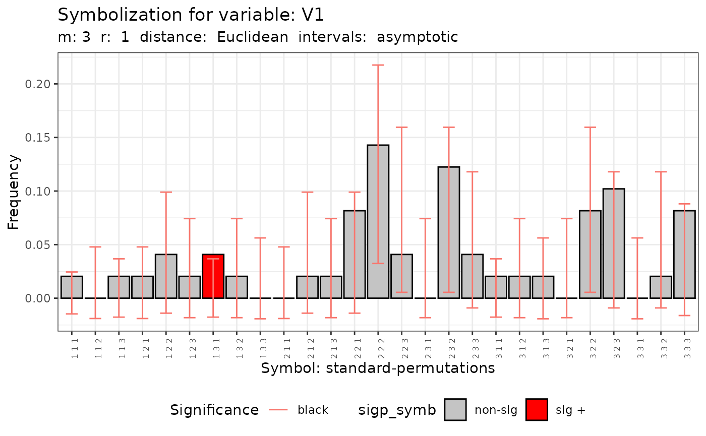
#>
#> [[2]]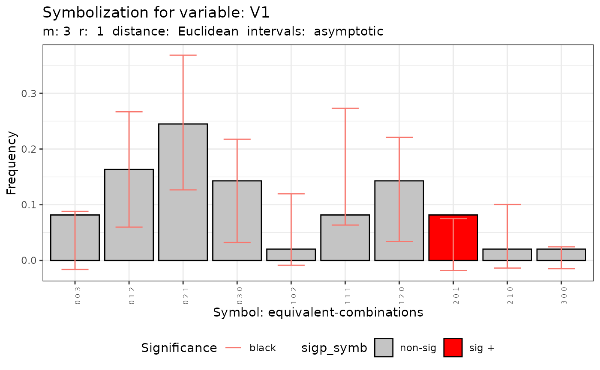
The Q-test using a sf object
- A sf object (Pebesma 2018) or a data frame can be used as input of the function:
sf_use_s2(FALSE)
#> Spherical geometry (s2) switched off
provinces_spain$GenderRatio <- factor(provinces_spain$Mal2Fml > 100)
levels(provinces_spain$GenderRatio) = c("men","woman")
f1 <- ~ provinces_spain$GenderRatio
q.test.sf <- Q.test(formula = f1, data = provinces_spain, m = 3, r = 1)- The method show the histogram of the number of symbols
plot(q.test.sf)
#> [[1]]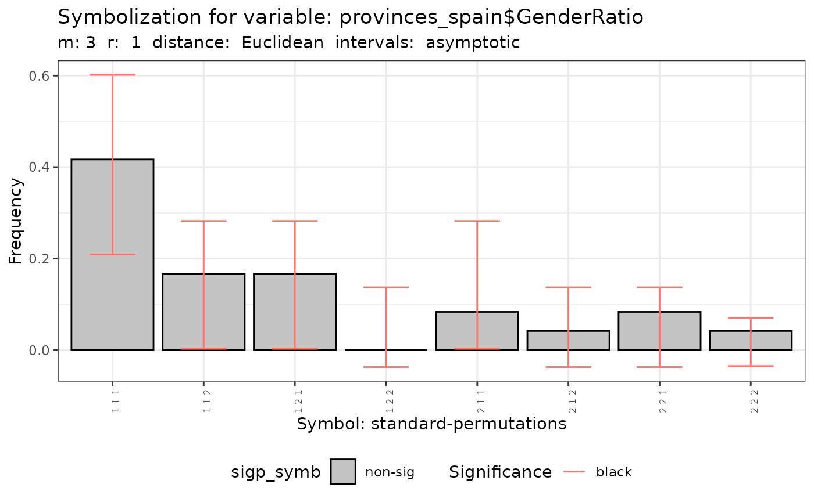
#>
#> [[2]]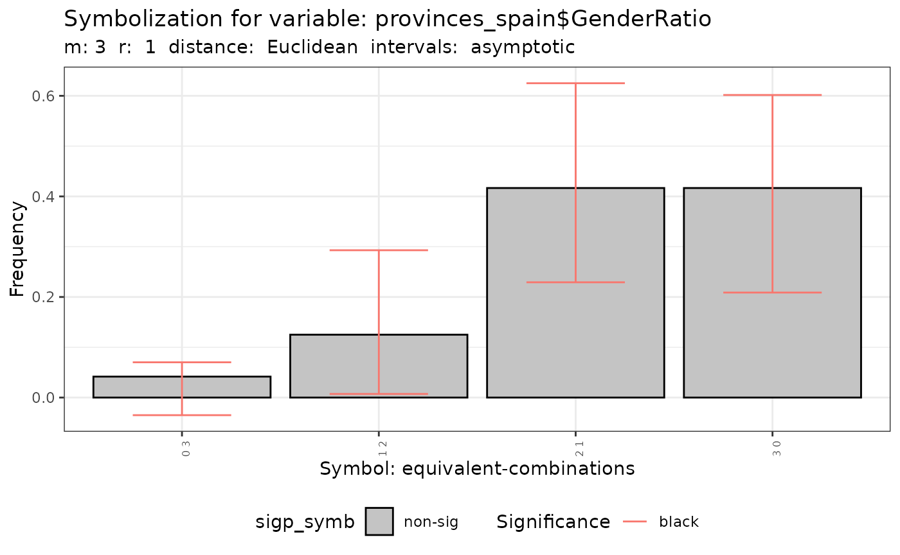
QMap-test
- The function obtain the test for maps comparison publish in Ruiz, López, and Páez (2012)
The next code generate two qualitative spatial process with different levels of spatial dependence and the Q-Map is apply.
p <- c(1/6,3/6,2/6)
rho = 0.5
QY1 <- dgp.spq(p = p, listw = listw, rho = rho)
rho = 0.8
QY2 <- dgp.spq(p = p, listw = listw, rho = rho)
dt = data.frame(QY1,QY2)
m = 3
r = 1
formula <- ~ QY1 + QY2
control <- list(dtmaxknn = 10)
qmap <- Q.map.test(formula = formula, data = dt, coor = coor, m = m, r = r, type ="combinations", control = control)
#> Warning in Q.map.test(formula = formula, data = dt, coor = coor, m = m, : The
#> ratio between the number of symbolized observations and the number of symbols
#> is lower than 5.- The output of id an object of the classes qmap and htest
Methods for qmap class
- The qmap object is a list with two elements. Each element is an object of the class htext
print(qmap[[1]])
#>
#> Q-Map test of Equivalence for qualitative data.
#>
#> Symbols type: combinations
#>
#> Ratio Symbolized observations/Num symbols = 4.6
#>
#> data: QY1 and QY2
#> QE = 135.12, df = 9, p-value < 2.2e-16
#> alternative hypothesis: two.sided- The method obtains the distribution of symbols with the confidence intervals specified by the user.
plot(qmap, ci=.6)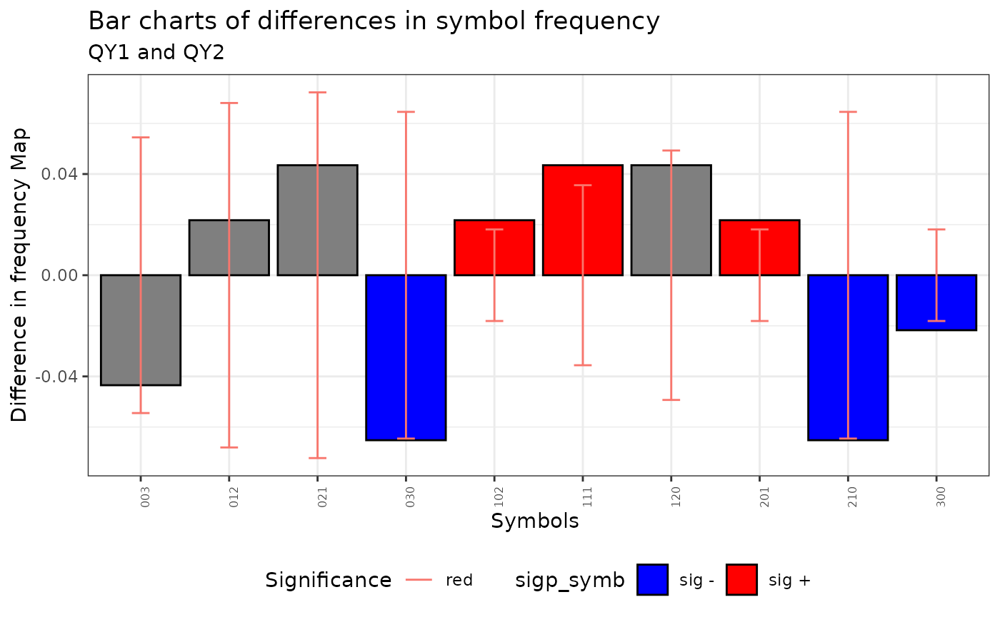
Runs test
The spatial runs test compute the global and local test for spatial independence of a categorical spatial data set (Ruiz, López, and Páez 2021).
Definition of spatial run:
In this section define the concepts of spatial encoding and runs, and construct the main statistics necessary for testing spatial homogeneity of categorical variables. In order to develop a general theoretical setting, let us consider to be the categorical spatial process of interest with Q different categories, where S is a set of coordinates.
Spatial encoding:
For a location denote by the set of neighbours according to the interaction scheme W, which are ordered from lesser to higher Euclidean distance with respect to location s.
The sequence as its elements have the same value (or are identified by the same class) is called a spatial run at location s of length r.
The spatial run statistic:
The total number of runs is defined as: where for Following result by the Central Limit Theorem, the asymtotical distribution of is:
In the one-tailed case, we must distinguish the lower-tailed test and the upper-tailed, which are associated with homogeneity and heterogeneity respectively. In the case of the lower-tailed test, the following hypotheses are used:
is i.i.d.
: The spatial distribution of the values of the categorical variable is more homogeneous than under the null hypothesis (according to the fixed association scheme).
In the upper-tailed test, the following hypotheses are used:
is i.i.d.
: The spatial distribution of the values of the categorical variable is more heterogeneous than under the null hypothesis (according to the fixed association scheme).
These hypotheses provide a decision rule regarding the degree of homogeneity in the spatial distribution of the values of the spatial categorical random variable.
Global Runs test
- The function sp.runs.test obtain the spatial runs test.
listw <- knearneigh(coor, k = 3)
srq <- sp.runs.test(fx = fx, listw = listw)- The output of this function is a object of the classes sprunstest and htest
Methods for spruntest class
- The spqdep has two methods for this class y
print(srq)
#>
#> Runs test of spatial dependence for qualitative data. Asymptotic
#> version
#>
#> data: mxf
#> sp.runs test = -1.4204, p-value = 0.1555
#> alternative hypothesis: two.sided
#> sample estimates:
#> Total runs Mean total runs Variance total runs
#> 269.0000 285.5152 135.1986
plot(srq)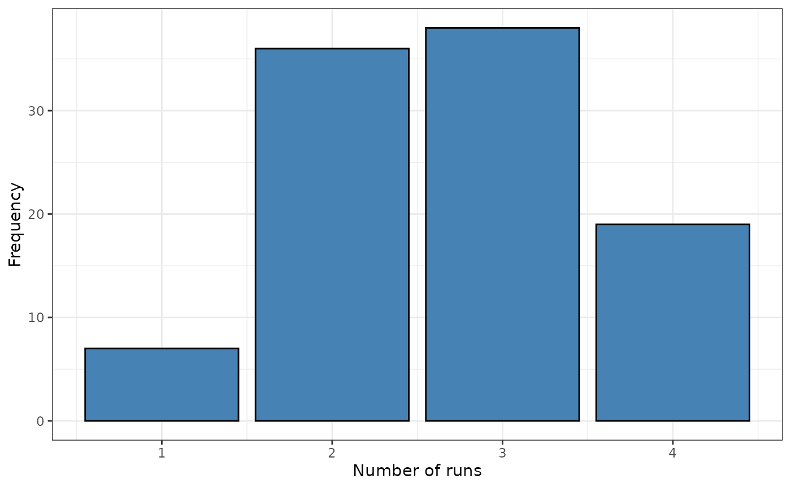
The local Runs test
- The function local.sp.runs.test obtain the local tests based on runs.
Asymptotic version
- Asymptotic version
lsrq <- local.sp.runs.test(fx = fx, listw = listw, alternative = "less")- The method list the statistic of each observation (points or regions)
print(lsrq)
#> runs.i E.i Std.i z.value p.value
#> 1 2 2.855152 0.8722689 -0.9803761 0.16345026
#> 2 4 2.855152 0.8722689 1.3124950 0.90532341
#> 3 3 2.855152 0.8722689 0.1660594 0.56594492
#> 4 3 2.855152 0.8722689 0.1660594 0.56594492
#> 5 4 2.855152 0.8722689 1.3124950 0.90532341
#> 6 4 2.855152 0.8722689 1.3124950 0.90532341
#> 7 2 2.855152 0.8722689 -0.9803761 0.16345026
#> 8 2 2.855152 0.8722689 -0.9803761 0.16345026
#> 9 3 2.855152 0.8722689 0.1660594 0.56594492
#> 10 1 2.855152 0.8722689 -2.1268116 0.01671787
#> 11 3 2.855152 0.8722689 0.1660594 0.56594492
#> 12 3 2.855152 0.8722689 0.1660594 0.56594492
#> 13 2 2.855152 0.8722689 -0.9803761 0.16345026
#> 14 2 2.855152 0.8722689 -0.9803761 0.16345026
#> 15 3 2.855152 0.8722689 0.1660594 0.56594492
#> 16 4 2.855152 0.8722689 1.3124950 0.90532341
#> 17 4 2.855152 0.8722689 1.3124950 0.90532341
#> 18 3 2.855152 0.8722689 0.1660594 0.56594492
#> 19 2 2.855152 0.8722689 -0.9803761 0.16345026
#> 20 3 2.855152 0.8722689 0.1660594 0.56594492
#> 21 2 2.855152 0.8722689 -0.9803761 0.16345026
#> 22 2 2.855152 0.8722689 -0.9803761 0.16345026
#> 23 2 2.855152 0.8722689 -0.9803761 0.16345026
#> 24 4 2.855152 0.8722689 1.3124950 0.90532341
#> 25 3 2.855152 0.8722689 0.1660594 0.56594492
#> 26 4 2.855152 0.8722689 1.3124950 0.90532341
#> 27 4 2.855152 0.8722689 1.3124950 0.90532341
#> 28 3 2.855152 0.8722689 0.1660594 0.56594492
#> 29 1 2.855152 0.8722689 -2.1268116 0.01671787
#> 30 3 2.855152 0.8722689 0.1660594 0.56594492
#> 31 3 2.855152 0.8722689 0.1660594 0.56594492
#> 32 2 2.855152 0.8722689 -0.9803761 0.16345026
#> 33 2 2.855152 0.8722689 -0.9803761 0.16345026
#> 34 4 2.855152 0.8722689 1.3124950 0.90532341
#> 35 2 2.855152 0.8722689 -0.9803761 0.16345026
#> 36 2 2.855152 0.8722689 -0.9803761 0.16345026
#> 37 3 2.855152 0.8722689 0.1660594 0.56594492
#> 38 3 2.855152 0.8722689 0.1660594 0.56594492
#> 39 2 2.855152 0.8722689 -0.9803761 0.16345026
#> 40 2 2.855152 0.8722689 -0.9803761 0.16345026
#> 41 2 2.855152 0.8722689 -0.9803761 0.16345026
#> 42 4 2.855152 0.8722689 1.3124950 0.90532341
#> 43 2 2.855152 0.8722689 -0.9803761 0.16345026
#> 44 2 2.855152 0.8722689 -0.9803761 0.16345026
#> 45 4 2.855152 0.8722689 1.3124950 0.90532341
#> 46 2 2.855152 0.8722689 -0.9803761 0.16345026
#> 47 3 2.855152 0.8722689 0.1660594 0.56594492
#> 48 2 2.855152 0.8722689 -0.9803761 0.16345026
#> 49 1 2.855152 0.8722689 -2.1268116 0.01671787
#> 50 3 2.855152 0.8722689 0.1660594 0.56594492
#> 51 3 2.855152 0.8722689 0.1660594 0.56594492
#> 52 2 2.855152 0.8722689 -0.9803761 0.16345026
#> 53 2 2.855152 0.8722689 -0.9803761 0.16345026
#> 54 2 2.855152 0.8722689 -0.9803761 0.16345026
#> 55 2 2.855152 0.8722689 -0.9803761 0.16345026
#> 56 3 2.855152 0.8722689 0.1660594 0.56594492
#> 57 3 2.855152 0.8722689 0.1660594 0.56594492
#> 58 2 2.855152 0.8722689 -0.9803761 0.16345026
#> 59 2 2.855152 0.8722689 -0.9803761 0.16345026
#> 60 2 2.855152 0.8722689 -0.9803761 0.16345026
#> 61 3 2.855152 0.8722689 0.1660594 0.56594492
#> 62 2 2.855152 0.8722689 -0.9803761 0.16345026
#> 63 3 2.855152 0.8722689 0.1660594 0.56594492
#> 64 3 2.855152 0.8722689 0.1660594 0.56594492
#> 65 4 2.855152 0.8722689 1.3124950 0.90532341
#> 66 3 2.855152 0.8722689 0.1660594 0.56594492
#> 67 4 2.855152 0.8722689 1.3124950 0.90532341
#> 68 3 2.855152 0.8722689 0.1660594 0.56594492
#> 69 3 2.855152 0.8722689 0.1660594 0.56594492
#> 70 2 2.855152 0.8722689 -0.9803761 0.16345026
#> 71 3 2.855152 0.8722689 0.1660594 0.56594492
#> 72 2 2.855152 0.8722689 -0.9803761 0.16345026
#> 73 4 2.855152 0.8722689 1.3124950 0.90532341
#> 74 3 2.855152 0.8722689 0.1660594 0.56594492
#> 75 1 2.855152 0.8722689 -2.1268116 0.01671787
#> 76 3 2.855152 0.8722689 0.1660594 0.56594492
#> 77 3 2.855152 0.8722689 0.1660594 0.56594492
#> 78 4 2.855152 0.8722689 1.3124950 0.90532341
#> 79 3 2.855152 0.8722689 0.1660594 0.56594492
#> 80 2 2.855152 0.8722689 -0.9803761 0.16345026
#> 81 3 2.855152 0.8722689 0.1660594 0.56594492
#> 82 3 2.855152 0.8722689 0.1660594 0.56594492
#> 83 1 2.855152 0.8722689 -2.1268116 0.01671787
#> 84 3 2.855152 0.8722689 0.1660594 0.56594492
#> 85 2 2.855152 0.8722689 -0.9803761 0.16345026
#> 86 2 2.855152 0.8722689 -0.9803761 0.16345026
#> 87 4 2.855152 0.8722689 1.3124950 0.90532341
#> 88 3 2.855152 0.8722689 0.1660594 0.56594492
#> 89 3 2.855152 0.8722689 0.1660594 0.56594492
#> 90 4 2.855152 0.8722689 1.3124950 0.90532341
#> 91 4 2.855152 0.8722689 1.3124950 0.90532341
#> 92 2 2.855152 0.8722689 -0.9803761 0.16345026
#> 93 3 2.855152 0.8722689 0.1660594 0.56594492
#> 94 4 2.855152 0.8722689 1.3124950 0.90532341
#> 95 3 2.855152 0.8722689 0.1660594 0.56594492
#> 96 1 2.855152 0.8722689 -2.1268116 0.01671787
#> 97 3 2.855152 0.8722689 0.1660594 0.56594492
#> 98 2 2.855152 0.8722689 -0.9803761 0.16345026
#> 99 1 2.855152 0.8722689 -2.1268116 0.01671787
#> 100 2 2.855152 0.8722689 -0.9803761 0.16345026- The method identify the localization with values of local test significant.
plot(lsrq, sig = 0.05)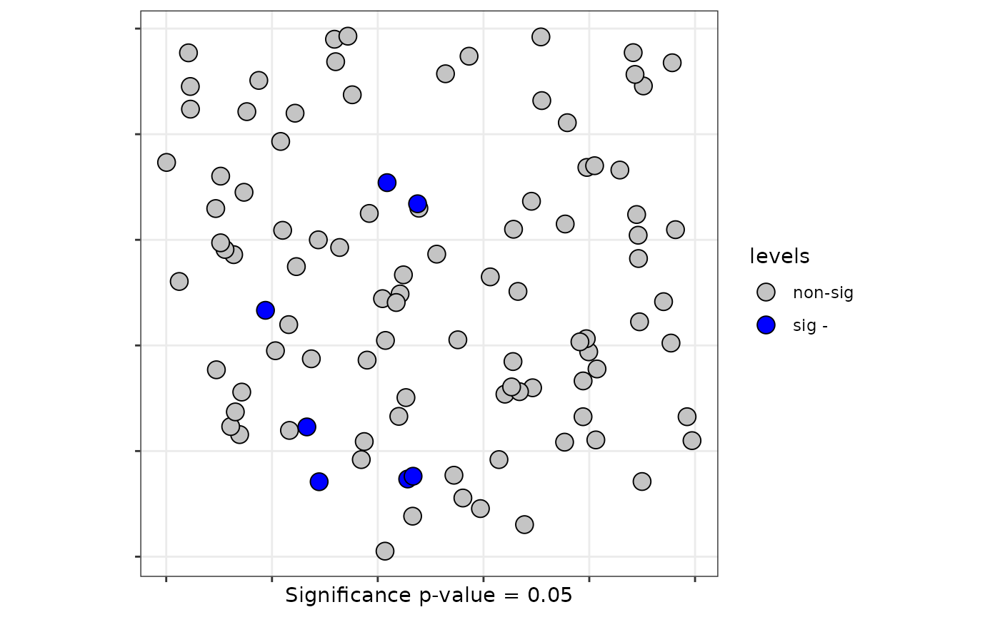
Monte Carlo local runs test
- The Monte Carlo distribution ot the local test using a sf object
data("provinces_spain")
listw <- spdep::poly2nb(as(provinces_spain,"Spatial"), queen = FALSE)
#> although coordinates are longitude/latitude, st_intersects assumes that they
#> are planar
provinces_spain$Mal2Fml <- factor(provinces_spain$Mal2Fml > 100)
levels(provinces_spain$Mal2Fml) = c("men","woman")
plot(provinces_spain["Mal2Fml"])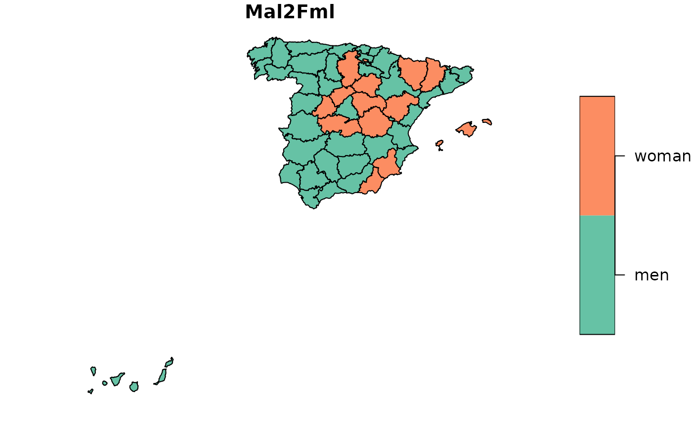
formula <- ~ Mal2Fml
# Boots Version
lsrq <- local.sp.runs.test(formula = formula, data = provinces_spain, listw = listw, distr ="bootstrap", nsim = 199)
plot(lsrq, sf = provinces_spain, sig = 0.10)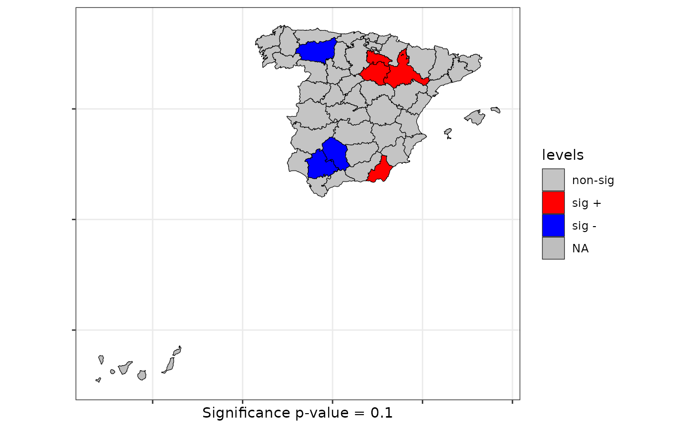
The Scan test
Two of the scan tests to identify clusters can be apply to test spatial structure in qualitative spatial processes.
The scan test don’t need pre-define the classical W conectivity matrix.
See Kanaroglou (2016)
The scan tests contrasts the null of independence of a spatial qualitative process and give additional information indicating one (or perhaps more) spatial cluster(s).
The scan tests don’t have asymptotic distribution. The significance is obtained by permutational resampling.
The output of the scan function is an object of the classes scantest and htest
Scan bernoulli
- For qualitative spatial process with two categories the bernoulli scan test is obtain with the next code
formula <- ~ Mal2Fml
scan.spain <- spqdep::scan.test(formula = formula, data = provinces_spain,
case="men", nsim = 99, distr = "bernoulli")
print(scan.spain)
#>
#> Scan test. Distribution: bernoulli
#>
#> data: Mal2Fml
#> scan-loglik = 6.0359, p-value = 0.07
#> alternative hypothesis: High
#> sample estimates:
#>
#> Total observations in the MLC = 17.00
#> Expected cases in the MLC = 11.84
#> Observed cases in the MLC = 16.00Scan test with flexible windows
- The flexible windows is an option. Note that is slow. Consider maximum nv of 12.
listw <- spdep::poly2nb(provinces_spain, queen = FALSE)
#> although coordinates are longitude/latitude, st_intersects assumes that they
#> are planar
scan.spain <- spqdep::scan.test(formula = formula, data = provinces_spain,
case="men", nsim = 99, windows = "flexible",
listw = listw, nv = 6, distr = "bernoulli")
#> +++++end
print(scan.spain)
#>
#> Scan test. Distribution: bernoulli
#>
#> data: Mal2Fml
#> scan-loglik = 1.9464, p-value < 2.2e-16
#> alternative hypothesis: High
#> sample estimates:
#>
#> Total observations in the MLC = 6.00
#> Expected cases in the MLC = 370.74
#> Observed cases in the MLC = 6.00Scan multinomial
- In case of a spatial process with three or more categories
data(FastFood.sf)
formula <- ~ Type
scan.fastfood <- scan.test(formula = formula, data = FastFood.sf, nsim = 99, distr = "multinomial", windows = "elliptic",
nv = 50)
print(scan.fastfood)
#>
#> Scan test. Distribution: multinomial
#>
#> data: Type
#> scan-loglik = 15.506, p-value < 2.2e-16
#> sample estimates:
#> H P S Sum
#> cases.expect 13.48 14.86 14.66 43
#> cases.observ 16.00 1.00 26.00 43Methods for scan test
- Two method can be used with scantest objects: and
summary(scan.fastfood)
#>
#> Summary of data:
#> Distribution....................: multinomial
#> Number of locations.............: 877
#> Total number of cases...........: 877
#> Names of cathegories...........: H P S
#> Total cases per category........: 275 303 299
#> Percent cases per category......: 0.31 0.35 0.34
#>
#> Scan statistic:
#> Total cases in the MLC.........: 43
#> Names of cathegories...........: H P S
#> Observed cases in the MLC......: 13.48 14.86 14.66
#> Expected cases in the MLC......: 16 1 26
#> Value of statistic (loglik ratio)....: 15.5058
#> p-value........................: 0
#>
#> IDs of cluster detect:
#> Location IDs included.....: 68 849 152 499 630 763 827 765 617 600 607 48 58 588 743 843 74 122 750 115 645 61 226 796 876 699 610 597 596 721 751 53 186 659 778 63 106 229 585 738 612 131 208
#>
#>
#> Secondary Scan statistic. Number 1
#> Total cases in secondary cluster......: 16
#> Names of cathegories.................: H P S
#> Percent per category total...........: 0.31 0.35 0.34
#> Percent per category inside cluster..: 0.25 0.5 0.25
#> Value of statisitic (loglik ratio)....: 11.5285
#> p-value.........................: 0.1
#> Location IDs included..................: 677 311 781 128 108 436 551 576 21 374 319 717 561 6 629 547
#>
#>
#> Secondary Scan statistic. Number 2
#> Total cases in secondary cluster......: 7
#> Names of cathegories.................: H P S
#> Percent per category total...........: 0.31 0.35 0.34
#> Percent per category inside cluster..: 0.14 0.29 0.57
#> Value of statisitic (loglik ratio)....: 7.0038
#> p-value.........................: 0.96
#> Location IDs included..................: 158 709 335 801 749 545 856
#>
#>
#> Secondary Scan statistic. Number 3
#> Total cases in secondary cluster......: 17
#> Names of cathegories.................: H P S
#> Percent per category total...........: 0.31 0.35 0.34
#> Percent per category inside cluster..: 0.35 0.35 0.29
#> Value of statisitic (loglik ratio)....: 6.8747
#> p-value.........................: 0.98
#> Location IDs included..................: 521 782 162 643 297 220 267 265 104 530 312 523 783 157 531 848 680
#>
#>
#> Secondary Scan statistic. Number 4
#> Total cases in secondary cluster......: 17
#> Names of cathegories.................: H P S
#> Percent per category total...........: 0.31 0.35 0.34
#> Percent per category inside cluster..: 0.47 0.29 0.24
#> Value of statisitic (loglik ratio)....: 6.7961
#> p-value.........................: 0.98
#> Location IDs included..................: 190 837 555 711 646 216 17 390 742 563 307 4 353 197 254 192 66
#>
#>
#> Secondary Scan statistic. Number 5
#> Total cases in secondary cluster......: 10
#> Names of cathegories.................: H P S
#> Percent per category total...........: 0.31 0.35 0.34
#> Percent per category inside cluster..: 0.4 0.2 0.4
#> Value of statisitic (loglik ratio)....: 6.5951
#> p-value.........................: 0.98
#> Location IDs included..................: 78 365 668 228 170 857 306 708 651 187
plot(scan.spain, sf = provinces_spain)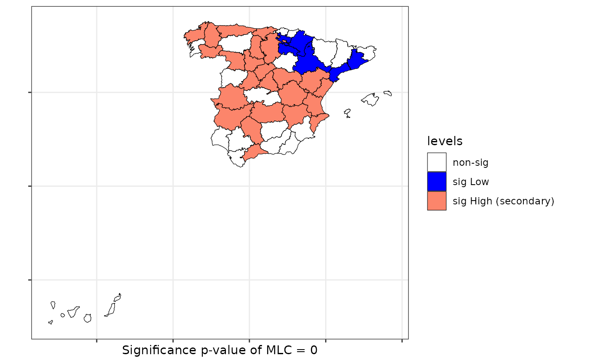
data(FastFood.sf)
# plot(scan.fastfood, sf = FastFood.sf)Similarity test
Farber, Marin, and Paez (2015) develop the similarity test.
The function calculates the similarity test for both asymptotic distribution and permutational resampling.
coor <- st_coordinates(st_centroid(FastFood.sf))
listw <- spdep::knearneigh(coor, k = 4)
formula <- ~ Type
similarity <- similarity.test(formula = formula, data = FastFood.sf, listw = listw)
print(similarity)
#>
#> Similarity test of spatial dependence for qualitative data.
#> Distribution: asymptotic
#>
#> data: Type
#> Similarity-test = -5.4476, p-value = 5.105e-08
#> alternative hypothesis: two.sidedJoin-count tests
- The functions of the spdep R-package have been wrapped for Bernoulli and Multinomial distributions. Asymptotic or Monte Carlo distributions (permutations) can be used to evaluate the signification of the tests.
Asymptotic distribution
provinces_spain$Older <- cut(provinces_spain$Older, breaks = c(-Inf,19,22.5,Inf))
levels(provinces_spain$Older) = c("low","middle","high")
f1 <- ~ Older + Mal2Fml
jc1 <- jc.test(formula = f1, data = provinces_spain, distr = "asymptotic", alternative = "greater", zero.policy = TRUE)
#> although coordinates are longitude/latitude, st_intersects assumes that they
#> are planar
summary(jc1)| JoinCount Spatial Tests (asymptotic) | |||||
| pairs | z-value | pvalue | Joincount | Expected | Variance |
|---|---|---|---|---|---|
| Older - multinomial - alternative: greater - Join count test under nonfree sampling | |||||
| high:high | −0.56 | 0.71077 | 14 | 15.71 | 9.48 |
| low:low | −0.93 | 0.82392 | 7 | 9.34 | 6.35 |
| middle:middle | −0.88 | 0.81070 | 13 | 15.71 | 9.48 |
| low:high | −0.47 | 0.68162 | 24 | 25.88 | 15.78 |
| middle:high | −1.21 | 0.88738 | 28 | 33.27 | 18.88 |
| middle:low | −0.22 | 0.58727 | 25 | 25.88 | 15.78 |
| Jtot | −1.29 | 0.90190 | 77 | 85.02 | 38.52 |
| Mal2Fml - binomial - alternative: greater - Join count test under nonfree sampling | |||||
| men-men | −2.17 | 0.98504 | 60 | 68.39 | 14.92 |
| woman-woman | 2.11 | 0.01740 | 13 | 8.01 | 5.59 |
| men-woman | −2.47 | 0.99333 | 38 | 49.39 | 21.19 |
Monte Carlo distribution
jc1 <- jc.test(formula = f1, data = provinces_spain, distr = "mc", alternative = "greater", zero.policy = TRUE)
#> although coordinates are longitude/latitude, st_intersects assumes that they
#> are planar
summary(jc1)| JoinCount Spatial Tests (Monte Carlo) | ||||
| pairs | pvalue | Joincount | Expected | Variance |
|---|---|---|---|---|
| Older - multinomial - alternative: greater - Monte-Carlo simulation of join-count statistic (nonfree sampling) | ||||
| high:high | 0.50900 | 14 | 13.77 | 10.80 |
| low:low | 0.68200 | 7 | 8.33 | 6.31 |
| middle:middle | 0.53800 | 13 | 13.86 | 10.40 |
| low:high | 0.40700 | 24 | 22.89 | 16.40 |
| middle:high | 0.68300 | 28 | 29.55 | 18.26 |
| middle:low | 0.25300 | 25 | 22.60 | 16.01 |
| Jtot | 0.38900 | 77 | 75.03 | 22.51 |
| Mal2Fml - binomial - alternative: greater - Monte-Carlo simulation of join-count statistic | ||||
| men-men | 0.52150 | 60 | 60.34 | 23.29 |
| woman-woman | 0.01750 | 13 | 7.10 | 5.95 |